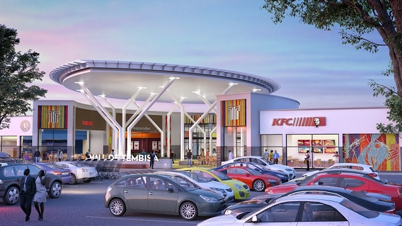
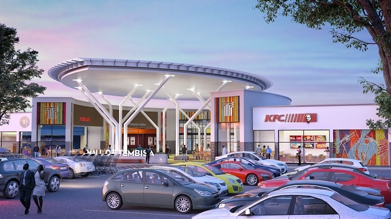

The Pine City Mall taking precautions and supporting its Retailers during COVID-19 Crisis The Pine City Mall will continue to operate and is committed to providing a safe, clean and hygienic environment for its customers and retailers under the current circumstances of the COVID-19 (Coronavirus) State of Disaster. We are aware of the community concern about COVID-19 and public spaces and are proactively taking measures to ensure that your shopping centre is still a safe place to visit, work and enjoy. To this end, The Pine City Mall has implemented 5 proactive precautionary safety measures to assist in the prevention of exposure to the coronavirus on your next visit: 1. We have increased the frequency of general and deep cleaning practices, with particular attention to daily sanitisation of all common and high-traffic areas. 2. Ablution facilities will be disinfected daily through fogging. 3. Hand sanitisers are provided at critical points such as the entrances, reception, customer service desks. 4. All frontline staff have been equipped with gloves and masks. 5. All events have been postponed indefinitely to ensure that there is no gathering of more than 100 people in our spaces. We continue to engage with our retailers and to ensure they are implementing the necessary measures to safeguard customers and personnel within their stores, as we implement our measures to limit exposure to the virus.